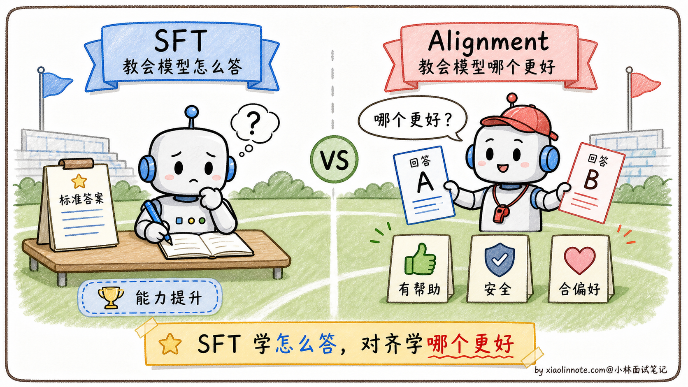
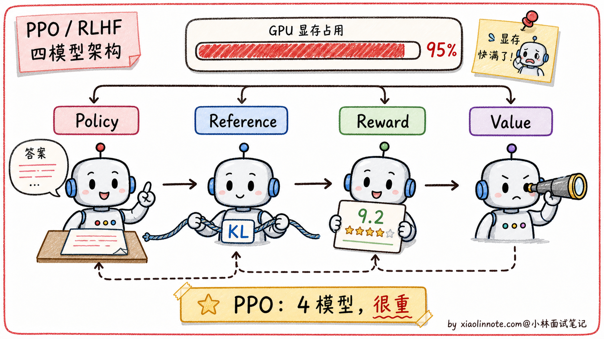
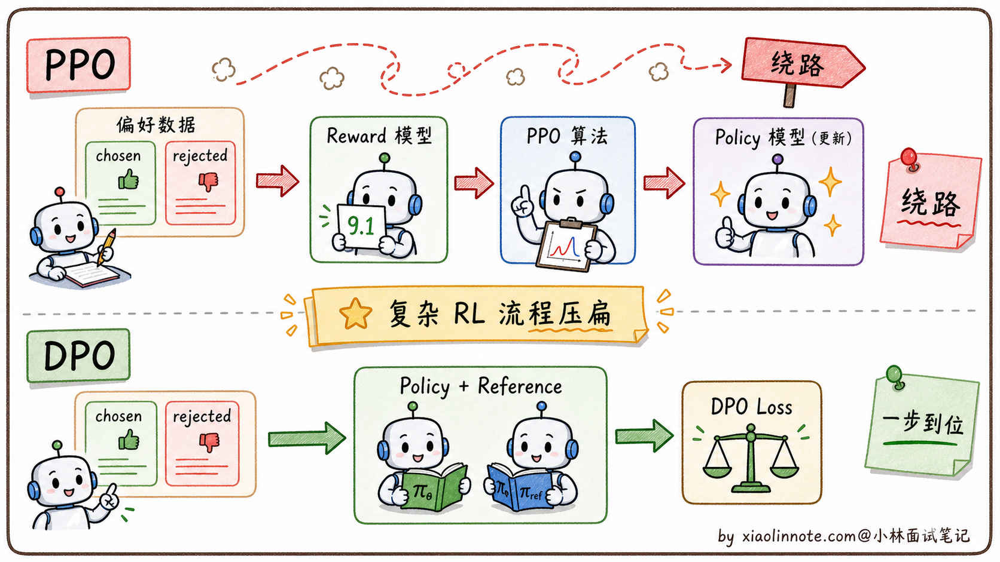
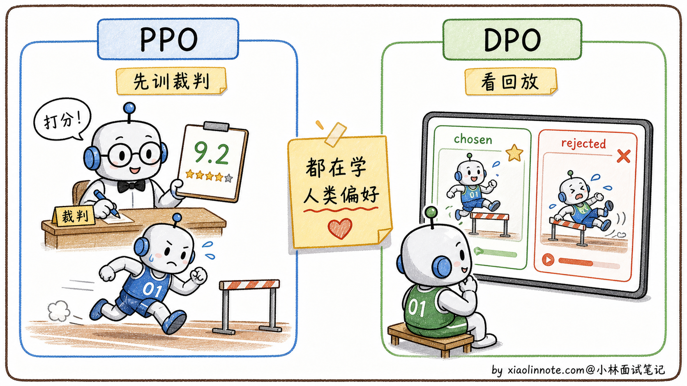
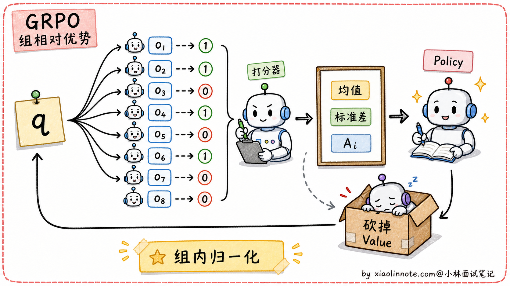
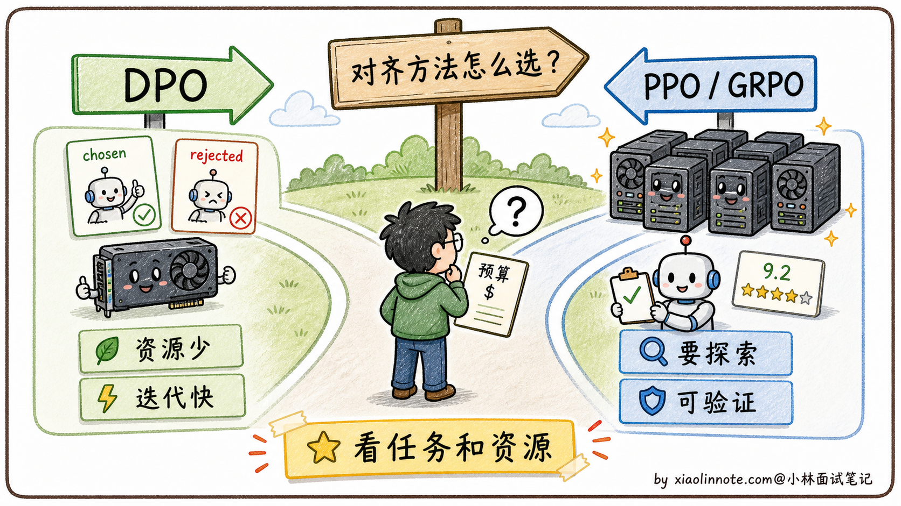

大模型的 DPO 和 PPO 的区别是什么？
👔面试官：来讲讲大模型的 DPO 和 PPO 有什么区别？
🙋♂️我：DPO 和 PPO 都是用来做对齐的，让模型的输出更符合人类偏好。DPO 比 PPO 简单一些。
👔面试官：……「简单一些」是表面话。具体哪里简单？少了什么组件？再说，PPO 是强化学习算法，DPO 是监督学习算法，这个根本性差别你能讲出来吗？
🙋♂️我：哦哦，DPO 不需要奖励模型，PPO 需要奖励模型？
👔面试官：方向对了。那再问一个：PPO 训练时要同时维护几个模型？为什么需要这么多？KL 约束又是干什么的？
🙋♂️我：呃……我记得是有 4 个模型，但具体是哪 4 个想不起来。
👔面试官：典型的「知道有但讲不清」。PPO 的 4 模型架构是 policy（主模型）+ reference（参考模型）+ reward model（奖励模型）+ value model（价值模型），DPO 把这个砍到只剩 policy + reference 两个。这种「能不能说清楚每个组件做什么」是面试拉差距的地方。回去搞清楚再来。
答到这里才反应过来，DPO 和 PPO 的区别不是「谁更简单」那一层，而是「在线 RL vs 等价监督学习」的本质分歧。把这条主线讲清楚，剩下 GRPO 那些新东西也就顺出来了。
💡 简要回答
DPO 和 PPO 都是大模型对齐训练里的方法，都是在 SFT 之后让模型的输出更符合人类期望。
PPO 是强化学习里的一个算法，在大模型里的用法是：先额外训练一个「奖励模型」来给模型的回答打分，然后用 PPO 这个 RL 算法不断调整大模型的参数，让它生成的内容往高分方向走。这套流程需要同时维护好几个模型，工程复杂度高，训练也容易不稳定，所以成本比较大。
DPO 是后来提出的简化方案，它不需要单独训练奖励模型。它直接拿「人类偏好对」数据，就是同一个问题的「好回答」和「差回答」，让模型直接学「应该更像哪个」。更准确地说，DPO 是从带 KL 约束的 RLHF 目标推导出来的一个闭式偏好优化目标，不是说它和任意 PPO 训练过程都完全等价。工程上可以把它理解成把复杂 RL 流程简化成监督学习问题，只需要两个模型，更稳定、更好实现。
简单总结：PPO 是「先训练裁判、再训练选手」，DPO 是「直接拿比赛录像告诉选手哪个动作对哪个动作错」，两者目标一致，但 DPO 省去了裁判这个中间层。
📝 详细解析
SFT 之后，还差什么？
要理解 PPO 和 DPO，得先搞清楚它们出现的背景：为什么 SFT 训完之后还需要对齐？
预训练让模型掌握了语言能力和世界知识；SFT（监督微调）让模型学会了用对话格式回答问题。但 SFT 本质上是「模仿」，模型在模仿标注人员写的标准答案的格式和风格。这里有一个根本问题：SFT 告诉模型「怎么写」，但没有告诉模型「哪个更好」。
举个例子，同一个问题「怎么学好 Python」，可以有很多种合格的回答：有的很简洁，有的很详细，有的带代码，有的全文字。SFT 只学了某一种写法，但用户对质量的偏好是有排序的，比如带代码示例的回答会更受欢迎，或者承认「我不知道」比自信地胡说更安全。
这种「知道合格，但不知道哪个更好」的局限，就是对齐阶段要解决的问题。不经过对齐的模型可能会生成有毒内容、一本正经地胡说八道，或者输出让用户不满意的答案。PPO 和 DPO 都是解决这个问题的方案，只是路径不同。

PPO：先培养「裁判」，再训练「选手」
PPO（Proximal Policy Optimization，近端策略优化）是强化学习里的一个经典算法，最早不是为大模型设计的，但 OpenAI 在 InstructGPT 里把它用到了 RLHF（基于人类反馈的强化学习）流程里。
第一步：训练奖励模型（Reward Model）
这个阶段，人类标注员会拿到很多「同一问题的多个回答」，然后按质量排名。比如问题「解释什么是递归」，回答 A 比回答 B 好，回答 B 比回答 C 好。用这些排名数据，训练一个专门的奖励模型，让它学会「给一个回答打质量分」。这个奖励模型就是裁判，它代替人类完成后续的自动评分。
第二步：用 PPO 优化主模型
有了裁判，就可以用强化学习来训练主模型了。流程是：主模型生成一段回答 -> 奖励模型打分 -> PPO 根据得分调整主模型的参数，让它以后生成更高分的回答。
但这里有一个危险：如果只追求高分，模型可能学会「钻空子」，生成一些奖励模型打高分但实际上没用的内容（这叫做 reward hacking）。为了防止这个，PPO 流程里会同时维护一个「参考模型」（Reference Model），也就是 SFT 之后的原始模型的冻结副本，并用 KL 散度（一种衡量两个概率分布差距的指标）约束主模型，让它不要偏离参考模型太远。KL 散度就像一根绳子，主模型可以向高分方向移动，但不能走太远。
整个 PPO 训练中，同时需要维护 4 个模型：
# PPO 训练时需要同时维护的四个模型
policy_model = load_sft_model() # 主模型（正在被优化的）
reference_model = load_sft_model() # 参考模型（冻结，SFT 模型副本，用于 KL 约束）
reward_model = load_reward_model() # 奖励模型（裁判，给回答打分）
value_model = load_value_model() # 价值模型（RL 辅助，估算未来奖励期望）
4 个模型同时加载到显存里，每个都和主模型差不多大，光是显存占用就是 SFT 训练的好几倍。加上 RL 训练本身的不稳定性（超参数敏感、容易 reward hacking、训练曲线震荡），PPO 的工程难度和资源成本都极高，能驾驭 PPO 的团队在业界凤毛麟角。

DPO：绕过裁判，直接看回放
DPO（Direct Preference Optimization，直接偏好优化）是 2023 年斯坦福提出的方法，核心思路是一个数学上的等价转化。
研究者们发现：RLHF（PPO 方案）的优化目标，可以通过推导改写成一个纯监督学习的目标函数，不需要显式训练和调用奖励模型。直觉上，「奖励模型」的功能可以被「主模型相对于参考模型的概率比值」完全替代，如果主模型在某个回答上比参考模型提升了更多概率，那这个回答就被认为更受偏好。
这个等价关系让 DPO 可以直接用「偏好对」数据（chosen/rejected）来训练，数据格式长这样：
# DPO 的训练数据格式：同一问题的「好回答」和「差回答」对
{
"prompt": "如何学好 Python？",
"chosen": "建议先从官方文档入手，配合做小项目实践...", # 人类更偏好的回答
"rejected": "Python 很简单，随便找个教程看看就行了..." # 人类不太喜欢的回答
}
DPO 的损失函数直觉上做的事情是：
# DPO 损失函数直觉（简化版，不是完整公式）
loss = -log(
sigma(
beta * (log(policy(chosen) / ref(chosen)) # chosen 在主模型和参考模型之间的对数概率比
- log(policy(rejected) / ref(rejected))) # rejected 在主模型和参考模型之间的对数概率比
)
)
# 目标：让 chosen 的比值 > rejected 的比值
# 即：相对于参考模型，主模型在 chosen 上的概率提升要大于在 rejected 上的提升
简单说就是两件事同时发生：模型对「好回答」的概率，相对于参考模型升高；模型对「差回答」的概率，相对于参考模型降低。整个过程不需要奖励模型，只需要主模型和参考模型两个：
# DPO 训练只需要两个模型
policy_model = load_sft_model() # 主模型（正在被优化的）
reference_model = load_sft_model() # 参考模型（冻结，用于计算概率比）
# 相比 PPO 少了 reward_model 和 value_model，资源需求减半
DPO 把对齐训练变成了一个普通的监督学习问题，用现成的深度学习框架就能实现，训练稳定，超参数也容易调。这就是为什么开源社区大量采用 DPO 的原因，不需要复杂的 RL 基础设施。

两种方案的对比
| 维度 | PPO | DPO |
|---|---|---|
| 是否需要奖励模型 | 需要（需单独训练） | 不需要 |
| 同时维护的模型数 | 4 个 | 2 个 |
| 训练稳定性 | 较差（RL 本身不稳定） | 好（等价于监督学习） |
| 实现难度 | 高（需要 RL 基础设施） | 低（标准训练框架即可） |
| 表达能力 | 强（可探索训练数据之外的空间） | 稍弱（受偏好数据分布限制） |
| 代表模型 | ChatGPT 早期版本、InstructGPT、Llama 2-Chat | Zephyr、部分 Mistral / Qwen 派生 Instruct 模型 |

PPO 的进阶版：GRPO 简介
讲 PPO 和 DPO 的同时，最近两年（2024-2026）非常火的一个新方案是 GRPO（Group Relative Policy Optimization），是 DeepSeek 在 2024 年 DeepSeekMath 论文里提出的 PPO 改进版。
GRPO 的核心创新是砍掉了 PPO 的 Value Model。
PPO 的 4 模型架构里，Value Model 的作用是估计「当前状态的预期奖励」作为基线，然后算「实际奖励 - 预期奖励」得到优势函数（Advantage）。但 Value Model 是一个独立的神经网络，规模和主模型差不多大，要单独训练、占显存。
GRPO 的做法是：对一个问题 q，从主模型采样 G 个回答（典型 G=8），用奖励模型（或对错判定）给每个回答打分得到 r_1, r_2, ..., r_G。然后用「组内归一化」算每个回答的相对优势：
A_i = (r_i - mean(r_1..r_G)) / std(r_1..r_G)
「组内平均分」充当了 Value Model 的角色，这个基线天然就有，不用单独训练 Value Model。整个 PPO 的 4 模型架构变成 3 模型架构（Policy / Reference / Reward），显存占用接近 DPO 但保留了 RL 探索能力。
GRPO 还有一个杀手级特性：对「可验证任务」特别友好。数学题、代码题这类「答案对就是对、错就是错」的场景，r_i 直接用 0/1 判定就行，连 Reward Model 都可以省。DeepSeek R1-Zero 就是这么做的，纯靠强化学习训出推理能力。

谁在用 GRPO：
- DeepSeek R1 / R1-Zero：推理模型的代表
- DeepSeek-Math：数学推理模型
- Qwen-Math 系列：阿里的推理增强模型
2026 年大厂面试问对齐方法，GRPO 几乎是必问点，能讲出「砍掉 Value Model 用组内归一化代替」这一句，就是高分回答。
各自适合什么场景？
理解了两者的权衡，选择就很清晰了。
PPO 适合对对齐效果要求极高、资源充足、有 RL 工程能力的团队。它能探索训练数据里没有的高质量回答方式，理论上表达能力更强，ChatGPT 早期的强大效果很大程度上就来自精心调优的 PPO 流程。但门槛极高，能驾驭它的团队凤毛麟角。
DPO 适合快速迭代、GPU 资源有限、开源社区场景。不需要 RL 工程能力，偏好数据收集相对容易（众包打排名就可以），训练一次成功率高。大多数开源模型在资源有限的情况下都选 DPO，效果虽然可能略逊于精心调优的 PPO，但工程代价小得多。
一个简单的判断原则是：如果你想在已有偏好数据的分布上把模型质量提升一步，DPO 够用且高效；如果你需要模型探索超出现有数据的能力边界、或者对齐效果要求接近 OpenAI 的水平，才值得投入 PPO 的工程成本。

🎯 面试总结
回到开头那段对话，问到 DPO 和 PPO 的区别，最重要的是先讲清楚两者都在解决「SFT 之后的对齐问题」。SFT 让模型学会按指令回答，但回答风格不一定符合人类偏好，所以需要进一步训练让模型学会「哪种回答更受人类欢迎」。这一句铺垫先讲到，面试官就知道你抓到了对齐这件事的本质。
接下来讲 PPO 的流程：先收集人类偏好排序数据 → 训一个奖励模型代替人类打分 → 用 PPO 算法调整主模型参数让它生成的回答尽量得高分。整个流程要同时维护 4 个模型（policy / reference / reward / value），训练复杂、不稳定、调参难。能把「4 个模型分别做什么」讲清楚，面试官就知道你真的研究过 RLHF 流程。
DPO 的核心创新是「把带 KL 约束的 RLHF 目标改写成偏好对上的监督学习损失」。不需要显式奖励模型，不需要跑 PPO，直接拿 (prompt, chosen, rejected) 三元组训练，让模型学会「好回答的概率比差回答提升得多」。流程从 4 模型砍到 2 模型，训练稳定、容易实现。能用「PPO 是先训裁判再训选手，DPO 是直接拿比赛录像告诉选手哪个动作对」这种类比讲出来，会比纯讲算法生动很多。
最关键的一句话是：两者目标一致，但 DPO 省掉了「奖励模型」这个中间层，让对齐训练变成监督学习。这是 DPO 在开源社区大爆发的核心原因。
如果还想再加分，可以提一句 GRPO（DeepSeek 2024 年提出的 PPO 改进版，砍掉 Value Model 用组内归一化代替），让面试官知道你跟得上 2026 年的最新对齐方法。能讲到这一层，已经是面试里很难追问的水平了。